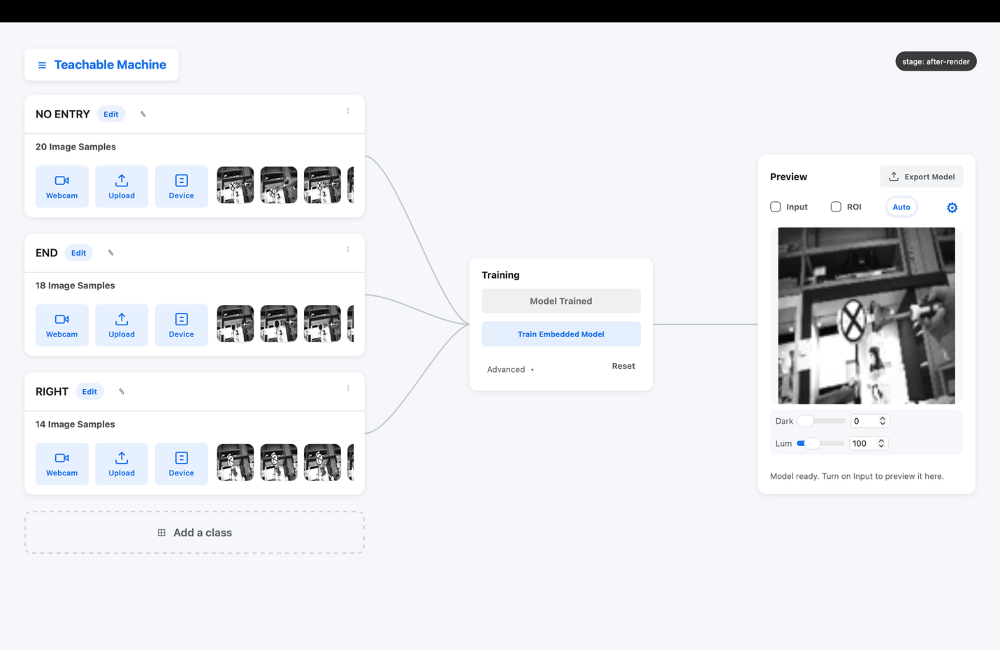
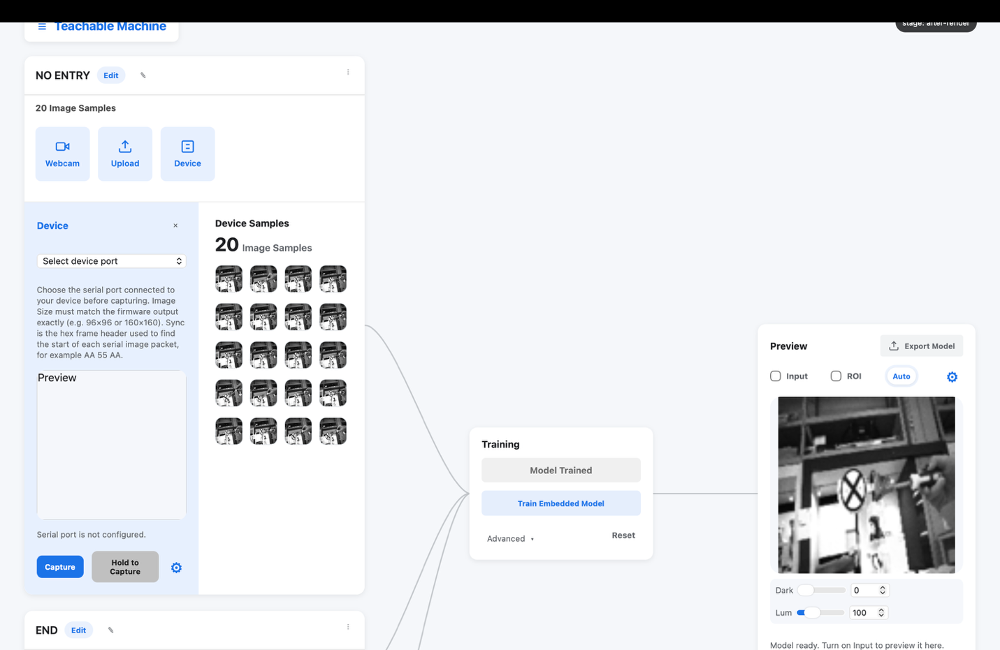
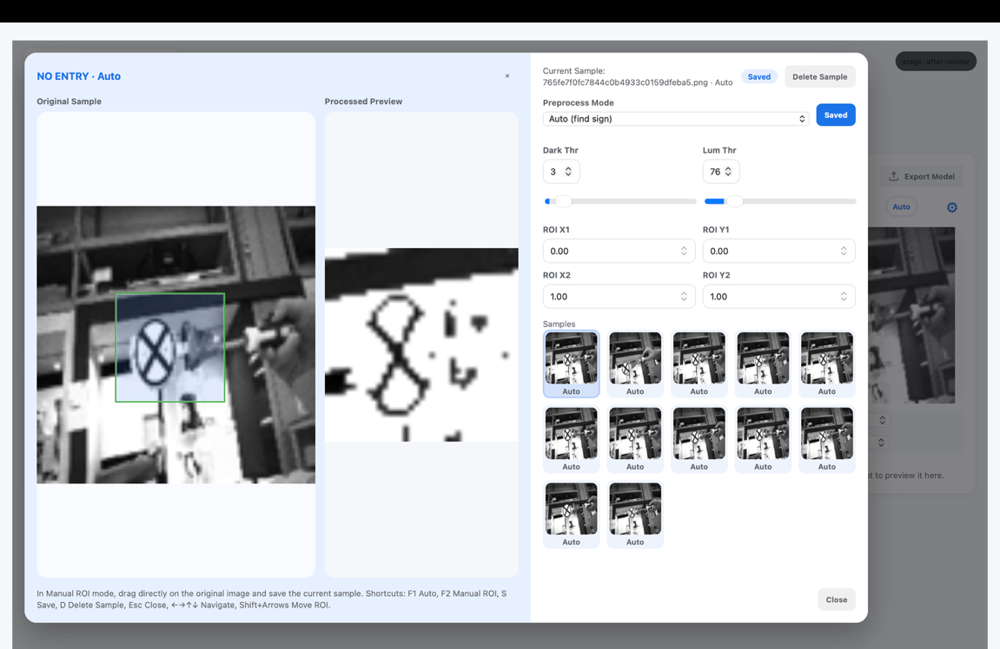
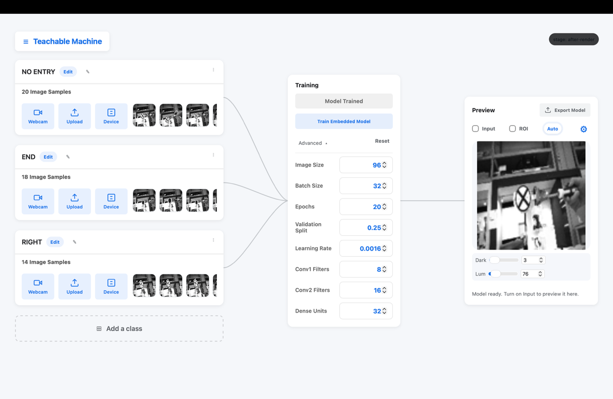
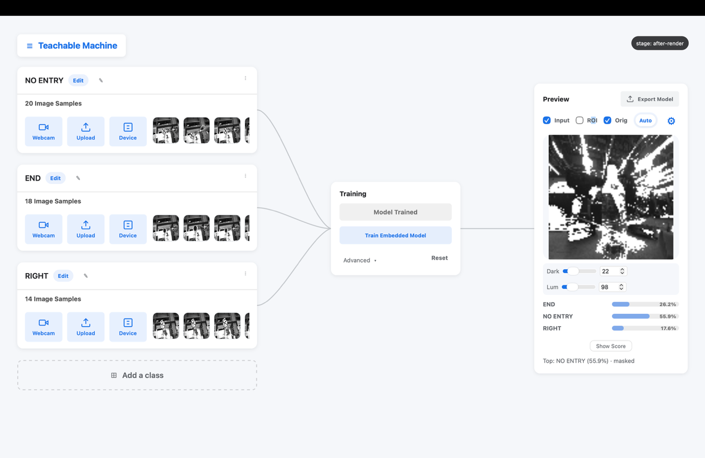
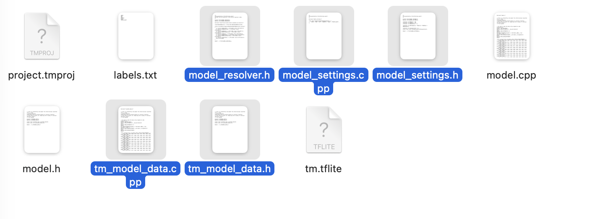

Edge AI Vision Workshop — Project Lab Manual
Your project: build a digit recognizer (0–9) and run it on the ESP32-P4. Follow the steps in order; every click is written out. Budget about 75–90 minutes. Ask for help the moment something doesn't match what the manual says.
0. The Project at a Glance
Goal — train a CNN that recognizes handwritten digits 0–9, shown to it on paper, and runs live on the ESP32-P4 board.
Success criteria (for the demo at the end):
- Your model is deployed on the board and classifying live camera images
- It gets at least 8 of 10 correct on a set of unseen test digits (written by someone other than you)
- You can explain one thing you changed to improve it
Rules — the model must be trained by you in this session, with samples you collected here. No pre-trained networks.
Workflow (same as the road-sign demo in the lesson): Collect → Preprocess → Train → Test → Iterate → Export → Deploy.
Part A — Setup Check (5 min)
If you completed the pre-lab installs, this is quick.
A1. Connect the board with your USB-C cable.
A2. Arduino IDE: Tools → Board → ESP32_mannual → ESP32P4 Dev Module, and copy the board settings shown by the instructor (do not set the Port yet).
A3. Open the provided camera-stream sample sketch, choose the Port, and click Upload.
A4. Open the Serial Monitor. A stream of garbled characters = the grayscale camera data = success.
A5. Close the Serial Monitor. It occupies the port that TFLiteTraining needs. (If you later see "port busy" in the app — this is why.)
Part B — Create Your Project (3 min)
B1. Open the TFLiteTraining app → Open Project → template.tmproj.
B2. Immediately save your own copy: menu (top-left) → Save Project → name it digits.tmproj. Save often from now on.
B3. Identify the three areas: Sample (left), Train (right), Preview (bottom).

The three areas of the workspacePart C — Collect the Data (20 min)
The single biggest factor in your results. Follow this recipe.
C1. Prepare the paper digits. Use the thick marker and blank paper. Write each digit large and bold (about 8–10 cm tall), one digit per sheet — you will hold them up to the camera.
C2. Connect the camera. In the Sample Area click Device, select your board's port, and open the Gear settings. Keep the defaults exactly: 96×96 · Grayscale · 115200 · sync header AA 55 AA — they match the flashed code.

Capture / Hold-to-Capture, and the Gear settings — defaults stay as shownC3. Create the classes. Make one class per digit: name them 0, 1, … 9. (Short of time? Do 1, 2, 3, 7 first — see Part D — and add the rest once the first version works. Four accurate classes beat ten broken ones.)
C4. Capture, with variety. For each class, capture 30–50 samples using Capture (single) or Hold to Capture (continuous). While capturing, vary for every handful of shots:
- Distance — near, mid, far
- Angle — straight on, tilted left/right
- Position — center, edges of the frame
- Lighting — turn to face different directions
- Rotation — digits slightly rotated (as a driver would see them)
Keep the counts roughly equal across classes — an unbalanced dataset makes the model biased toward the biggest class.
C5. Clean up. Hover any blurry or accidental capture and click to delete it. Bad samples teach wrong things.
Why capture with Device instead of your laptop webcam? The model will live behind the board's camera — training on images from that same camera (same lens, same angle, same lighting) gives it the best chance. This general rule is called matching the deployment domain.
Part D — Preprocess (10 min)
D1. Click the Edit icon to enter the image-processing page. Left is the Image Viewer (original + processed), right is the Sample Worktable.

Edit page — Image Viewer with ROI, and the Sample WorktableD2. Choose a mode:
- Auto (F1) — the app finds and crops the darkest region automatically. Good when the digit is the darkest thing in frame.
- Manual ROI (F2) — you drag the crop box yourself (Shift + arrow keys nudge it). More control; use it if Auto grabs shadows or your hand.
D3. Set the thresholds (they apply to the whole class):
- Dark Thr — pixels darker than this become pure white (removes dark shadows, sleeves, background)
- Lum Thr — pixels brighter than this become pure white (removes blown-out highlights)
The goal: on the processed preview, the digit is black and almost everything else is white. Keep the thresholds moderate — if the digit itself starts dissolving, you've gone too far.
D4. Move between samples with the arrow keys, check a few samples of every class, adjust per class as needed.
D5. Press S to save. Then press S again. Unsaved preprocessing is lost — this is the most common way groups lose 10 minutes.
D6. All processed images are automatically resized to image size × image size (default 96) for training — that's expected.
Part E — Train (5 min)
E1. In the Train Area click the Advanced icon. Start from the defaults:
| Parameter | Start with |
|---|---|
| Image size | 96 |
| Color mode | grayscale |
| Batch size | 16 |
| Epochs | 20 |
| Validation split | 0.25 |
| Learning rate | 0.001 |
| Conv1 / Conv2 filters | 8 / 16 |
| Dense units | 32 |
E2. Click Train Embedded Model and wait for training to finish.

Advanced panel — set hyperparameters, then Train Embedded ModelE3. Read the validation accuracy. Around/above 90% is a good first run for 4–10 digit classes. 60–70% means the data needs work, not the hyperparameters — go back to C4 (more variety) or D3 (cleaner preprocessing).
Part F — Test on Unseen Data (10 min)
This is where you find out if your model learned or memorized.
F1. In the Preview Area, click the Gear → source Device + your port.
F2. Toggle Input and hold up a digit written by another team member (not in your training set).
F3. Read the confidence bar (toggle show %). Note what ROI shows — that's what the model actually sees.

Interpretation view — live image, ROI, and the confidence barF4. Common confusions and their fixes:
| Confusion | Usual cause | Fix |
|---|---|---|
| 1 ↔ 7 | thin strokes, similar shapes | more samples, thicker marker, larger ROI |
| 3 ↔ 8, 9 ↔ 8 | loops closing up in gray | raise Dark Thr so faint loops vanish; more lighting variety |
| 4 ↔ 9 | open vs closed top | more rotated variants of both |
| everything → one class | unbalanced dataset | equalize the sample counts (C4) |
| great on training, poor live | overfitting / too little variety | more varied samples, sometimes fewer epochs |
F5. After any fix: retrain (E2) and retest. Two or three iterations are normal — that's the engineering loop.
Part G — Export and Deploy (10 min)
G1. Click Export model and pick a folder you can find. Then menu → Save Project.
G2. From the export folder, copy these five files into the TFLite.ino project folder (replace existing):

The five export files, ready to copy into the project foldertm_model_data.cpp // the quantized model
tm_model_data.h
model_resolver.h
model_settings.cpp
model_settings.h
G3. Open TFLite.ino and check that IMG_SIZE equals the image size you trained with (default 96). A mismatch = nonsense predictions.
G4. Upload to the board, open the Serial Monitor, and hold up a digit — your model, running on the chip, answers live.
Part H — Final Evaluation (10 min)
H1. Ask another team (or the instructor) to write 10 test digits you have never shown the model.
H2. Show each one to the board and record the results:
| # | True digit | Predicted | Confidence | Correct? |
|---|---|---|---|---|
| 1 | ||||
| 2 | ||||
| … | ||||
| 10 |
H3. ≥ 8/10 correct = project complete. Show your table and the live demo to the instructor.
Part I — Extensions (if you finish early)
- Sample efficiency: delete samples until accuracy drops — what's the minimum per class that still works?
- Speed vs. size: set Conv1/Conv2/Dense to the maximums and retrain — can you feel the slower inference on the serial output? Compare against 4/8/16.
- New handwriting: have a friend add 10 samples of their own handwriting per class — does the model generalize better?
- Confuse the model: deliberately show partial digits, far digits, digits at extreme angles — where exactly does it break? That's your model's real-world boundary.
Troubleshooting
| Symptom | Fix |
|---|---|
| "Port busy" in the app | Close the Arduino Serial Monitor (A5) |
| No port in Device list | Replug USB; try a data cable; check board is powered |
| All predictions one class, low confidence | Unbalanced or too-few samples — see F4 |
| Export missing files | Re-export with the default settings; all five files generate together |
| Upload fails in IDE | Board settings mismatch — compare against the instructor's table again |